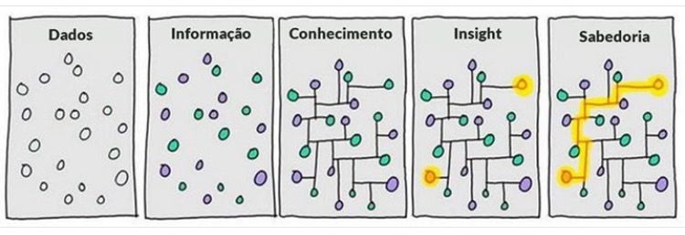
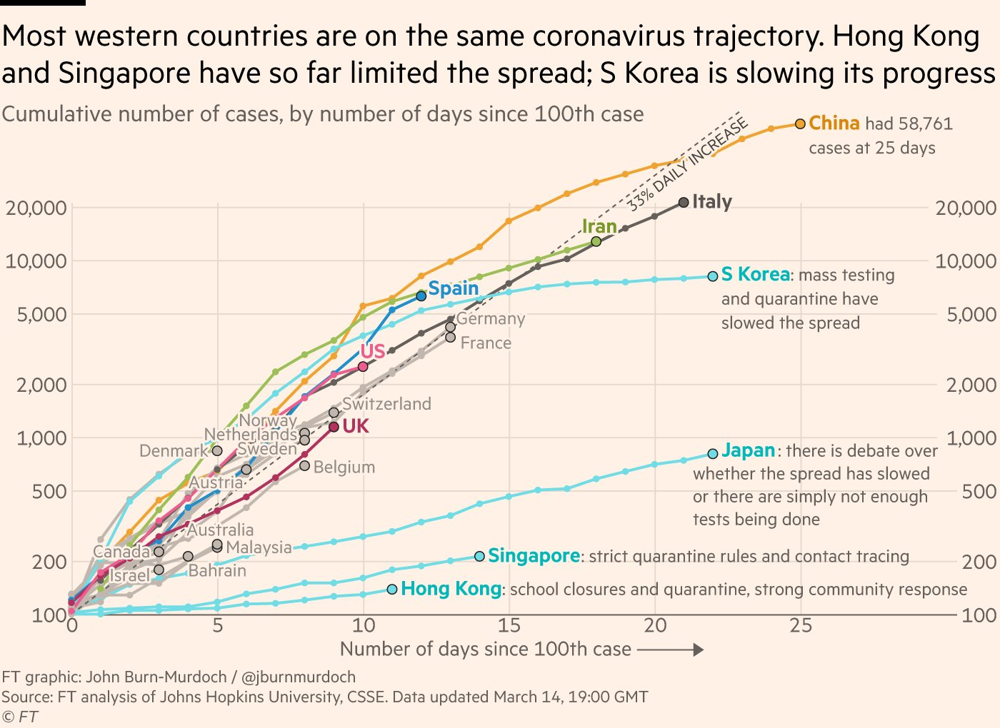
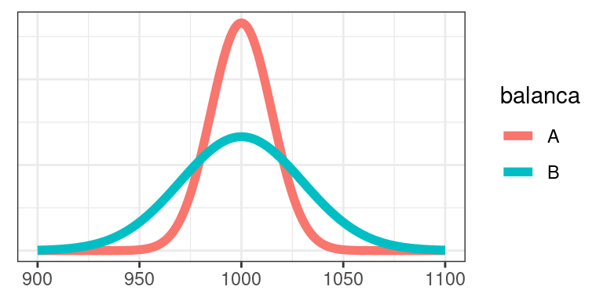
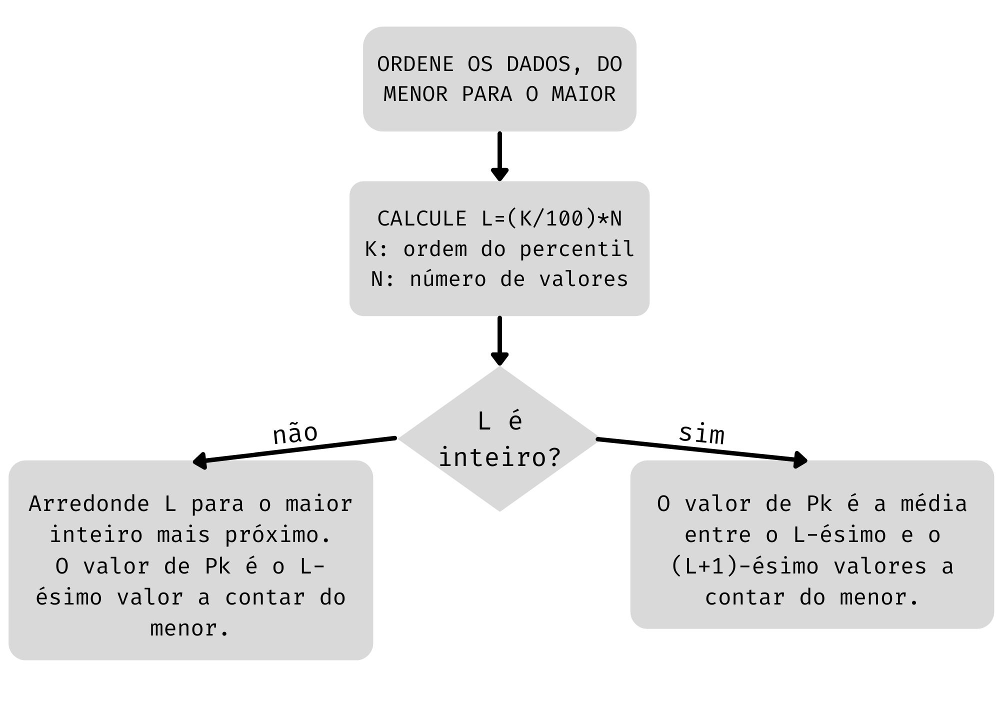

Chapter 1 Análise Descritiva
1.1 Introdução
A indútria 4.0, ou quarta revolução industrial, é a continuação do aperfeiçoamento das máquinas, um processo que começou com a primeira Revolução Industrial e nunca mais parou. Podemos dizer que a indústria 4.0 é a realidade na qual a tecnologia industrial está cada vez mais eficiente: mais inteligente, mais rápida e mais precisa. O termo é utilizado para caracterizar a utilização do que há de mais moderno para produzir bens de consumo: big data, internet das coisas, inteligência artificial e muito mais.
O big data é um conceito muito importante e que vem ganhando bastante notoriedade nos últimos anos. É o termo em Tecnologia da Informação (TI) que trata sobre grandes conjuntos de dados que precisam ser processados e armazenados. É um conceito-chave para a quarta revolução industrial, pois são esses dados que permitem às máquinas trabalharem com maior eficiência.
Dados sozinhos não podem dizer muita coisa. Por exemplo, eu posso te dizer que minha cor favorita é verde. Isso não te leva a tirar muitas conclusões sobre minha personalidade. Porém, se eu te der uma pequena tabela em excel com alguns dos meus livros favoritos, provavelmente você terá conclusões mais significativas sobre mim. O que aconteceu foi que você, munido da sua capacidade mental e analítica, aliada a uma certa quantidade de dados foi capaz de tirar alguns insights sobre um assunto. E é exatamente aí que está a beleza e a grandiosidade da chamada “Era do Big Data.”

Big Data é basicamente análise de dados. De fato isso não é nenhuma novidade. Há muitos e muitos anos a humanidade coleta dados para serem analisados. A grande inovação está em aliar métodos antigos e limitados de análise de dados aos modernos recursos de hardware de alto processamento. Ou seja, agora é possível transitar todos esses cálculos e análises por meio de softwares desenvolvidos especificamente para trabalharem com enormes quantidades de dados. Uma solução de Big Data funciona com algoritmos complexos que trabalham a informação de modo a obter como saída os mais diversos tipos de insights.
A Análise Descritiva é a fase inicial deste processo de estudo dos dados coletados. Utilizamos métodos de Estatística Descritiva para organizar, resumir e descrever os aspectos importantes de um conjunto de características observadas ou comparar tais características entre dois ou mais conjuntos. As ferramentas descritivas são os muitos tipos de gráficos e tabelas e também medidas de síntese como porcentagens, índices e médias.
Ao se condensar os dados, perde-se informação, pois não se têm as observações originais. Entretanto, esta perda de informação é pequena se comparada ao ganho que se tem com a clareza da interpretação proporcionada.
A descrição dos dados também tem como objetivo identificar anomalias, até mesmo resultante do registro incorreto de valores, e dados dispersos, aqueles que não seguem a tendência geral do restante do conjunto.
Não só nos artigos técnicos direcionados para pesquisadores, mas também nos artigos de jornais e revistas escritos para o público leigo, é cada vez mais frequente a utilização destes recursos de descrição para complementar a apresentação de um fato, justificar ou referendar um argumento.
Durante a pandemia da COVID-19 foram publicadas ótimas visualizações de dados de casos e mortes, mas a mais conhecida delas é o gráfico de John Burn-Murdoch no Financial Times. Esta é uma ótima visualização e ajudou a apresentar gráficos em escala logarítimica para um público amplo.

Ao mesmo tempo em que o uso das ferramentas estatísticas vem crescendo, aumenta também o abuso de tais ferramentas. É muito comum vermos em jornais e revistas, até mesmo em periódicos científicos, gráficos - voluntariamente ou intencionalmente - enganosos e estatísticas obscuras para justificar argumentos polêmicos.
Neste capítulo iremos mergulhar no mundo da Análise de Descritiva de Dados, explorando estatísticas descritivas e análises gráficas com os pacotes mais atuais do software \(\texttt{R}\) (R Core Team 2020).
1.2 Coleta e Armazenamento de Dados
1.2.1 Exemplo inicial
O primeiro caso da COVID-19 no Brasil foi confirmado em 25 de fevereiro de 2020, em São Paulo. Desde então o Governo Federal do Brasil reporta diariamente o número total de casos e mortes no país para cada Unidade da Federação, que corresponde aos 26 estados mais o Distrito Federal. No github do Wesley Cota (Cota 2020) é possível extrair tais informações atualizadas para o dia anterior de forma sistematizada numa planilha de dados de maneira a realizar a entrada dos dados num programa de computador.
Para exemplificação, iremos extrair do github do Wesley Cota a planilha que possui informações agregadas para o Brasil e suas UFs. Este é o formato mais comum de uma base de dados, composta por linhas e colunas. Cada linha contém os dados de uma Unidade da Federação (elemento) e as informações (variáveis) esntão dispostas nas colunas. Dessa forma, a base de dados contém um número de linhas igual ao número de Unidades da Federação mais o total Brasil e um número de colunas igual ao número de variáveis sendo estudadas.
| Estado | Casos | Mortes |
|---|---|---|
| TOTAL | 25820745 | 629301 |
| AC | 102866 | 1877 |
| AL | 262163 | 6451 |
| AM | 537441 | 13981 |
| AP | 154329 | 2054 |
| BA | 1374028 | 28026 |
| CE | 1131297 | 25332 |
| DF | 617945 | 11197 |
| ES | 881190 | 13585 |
| GO | 1050619 | 25101 |
| MA | 389276 | 10501 |
| MG | 2777186 | 57440 |
| MS | 431152 | 9912 |
| MT | 639332 | 14342 |
| PA | 656272 | 17382 |
| PB | 504194 | 9738 |
| PE | 712083 | 20682 |
| PI | 347924 | 7405 |
| PR | 2015500 | 41320 |
| RJ | 1790994 | 69970 |
| RN | 431134 | 7758 |
| RO | 323699 | 6844 |
| RR | 143511 | 2099 |
| RS | 1850106 | 37000 |
| SC | 1458544 | 20664 |
| SE | 297332 | 6109 |
| SP | 4666941 | 158523 |
| TO | 273687 | 4008 |
Note que se usássemos uma base de dados que contém a evolução da doença por UF então teríamos uma combinação que seria uma linha para cada dia e cada estado, aumentando consideravelmente a dimensão da base.
1.3 Tipos de Variáveis
Variável é a característica de interesse que é medida em cada indivíduo da amostra ou população. Como o nome diz, seus valores variam de indivíduo para indivíduo. As variáveis podem ter valores numéricos ou não numéricos.
1.4 Variáveis Quantitativas
São as características que podem ser medidas em uma escala quantitativa, ou seja, apresentam valores numéricos que fazem sentido. Podem ser contínuas ou discretas.
- Variáveis contínuas: características mensuráveis que assumem valores em uma escala contínua (na reta real), para as quais valores não-inteiros (com casas decimais) fazem sentido. Usualmente devem ser medidas através de algum instrumento.
- Exemplos: peso (balança), altura (régua), tempo (relógio), pressão arterial, idade.
- Variáveis discretas: características mensuráveis que podem assumir apenas um número finito ou infinito contável de valores e, assim, somente fazem sentido valores inteiros. Geralmente, são o resultado de contagens.
- Exemplos: número de filhos, número de bactérias por litro de leite, número de casos de uma doença.
1.4.1 Variáveis Qualitativas (ou categóricas)
São as características que não possuem valores quantitativos, mas, ao contrário, são definidas por várias categorias, ou seja, representam uma classificação dos indivíduos. Podem ser nominais ou ordinais.
- Variáveis nominais: não existe ordenação entre as categorias. Exemplos: sexo, cor dos olhos, fumante/não fumante, doente/sadio.
- Variáveis ordinais: existe uma ordenação entre as categorias. Exemplos: escolaridade (1o, 2o, 3o graus), estágio da doença (inicial,intermediário, terminal), mês de observação (janeiro, fevereiro,\(\ldots\), dezembro).
Uma variável originalmente quantitativa pode ser coletada de forma qualitativa. Por exemplo, a variável idade, medida em anos completos, é quantitativa (contínua); mas, se for informada apenas a faixa etária (0 a 5 anos, 6 a 10 anos etc.), é qualitativa (ordinal). Outro exemplo é o peso dos lutadores de boxe, uma variável quantitativa (contínua) se trabalhamos com o valor obtido na balança, mas qualitativa (ordinal) se o classificarmos nas categorias do boxe (peso-pena, peso-leve, peso-pesado etc.).
Outro ponto importante é que nem sempre uma variável representada por números é quantitativa. O número do telefone de uma pessoa, o número da casa, o número de sua identidade. Às vezes o sexo do indivíduo é registrado na planilha de dados como 1 se macho e 2 se fêmea, por exemplo. Isto não significa que a variável sexo passou a ser quantitativa.
1.5 Medidas de Tendência Central
A tendência central de uma variável em um conjunto de dados é caracterizada pelo valor típico dessa variável. Essa é uma maneira de resumir a informação contida nos dados, pois escolheremos um valor para representar todos os outros. Assim, poderíamos perguntar, por exemplo, qual é a altura típica dos brasileiros adultos no final da década de 90 e compará-la com o valor típico da altura dos brasileiros no final da década de 80, a fim de verificar se os brasileiros estão se tornando, em geral, mais altos, mais baixos ou não sofreram nenhuma alteração em sua altura típica. Fazer essa comparação utilizando medidas-resumo (as alturas típicas em cada período) é bem mais sensato do que comparar os dois conjuntos de dados valor a valor, o que seria inviável. Mas, como identificar o valor típico de um conjunto de dados?
Existem três medidas que podem ser utilizadas para descrever a tendência central de um conjunto de dados: a média, a mediana e a moda. Apresentaremos essas três medidas e discutiremos suas vantagens e desvantagens.
1.5.1 Média Aritmética Simples
A média aritmética simples (que chamaremos apenas de média) é a medida de tendência central mais conhecida e usada para o resumo de dados. Essa popularidade pode ser devida à facilidade de cálculo e à idéia simples que ela nos sugere. De fato, se queremos um valor que represente a altura dos brasileiros adultos, por que não medir as alturas de uma amostra de brasileiros adultos, somar os valores e dividir esse “bolo” igualmente entre os participantes? Essa é a idéia da média aritmética.
Para apresentar a média, primeiramente vamos definir alguma notação. A princípio, essa notação pode parecer desnecessária, mas facilitará bastante nosso trabalho futuro.
\[\begin{equation*} \text{Notação} \begin{cases} n & \text{tamanho da amostra} \\ x_i & \text{valor da $i$-ésima observação} \\ \sum_{i=1}^n x & \text{soma de todas as observações} \\ \bar x & \text{símbolo que representa a média aritmética simples} \end{cases} \end{equation*}\]
Assim,
\[\begin{equation*} \bar x = \frac{\text{soma de todas as observações}}{{n}} = \frac{\sum_{i=1}^n x}{n} \end{equation*}\]
Exemplo: No conjunto de dados (1.3, 0.7, 5.8, 2.4, 1.2), temos \(n=5\), \(x_1=\) 1.3, \(x_2=\) 0.7, \(x_3=\) 5.8, \(x_4=\) 2.4 e \(x_5=\) 1.2, portanto \(\sum_{i=1}^5 x_i=\) 1.3 + 0.7 + 5.8 + 2.4 + 1.2 \(=\) 11.4 e assim \(\bar x = \frac{11.4}{5}=2.28\).
Se esses seis valores representassem, por exemplo, as quantidades de peixe pescado (em toneladas) durante cinco dias da semana, a quantidade típica pescada por dia, naquela semana, seria 2,28 toneladas. Como estamos representando o valor típico pela média aritmética, podemos falar em quantidade média diária naquela semana.
Fazendo no \(\texttt{R}\):
mean(c(1.3, 0.7, 5.8, 2.4, 1.2))## [1] 2.281.5.2 Mediana
A mediana de um conjunto de dados é definida como sendo o “valor do meio” desse conjunto de dados, dispostos em ordem crescente, deixando metade dos valores acima dela e metade dos valores abaixo dela.
Como calcular a mediana? Basta seguir sua definição. Vejamos:
- \(n\) é ímpar: Existe apenas um “valor do meio,” que é a mediana.
- Seja o conjunto de dados (1.3, 0.7, 5.8, 2.4, 1.2).
- Ordenando os valores (0.7, 1.2, 1.3, 2.4, 5.8).
- O valor do meio é o 1.3.
- A mediana é o valor 1.3.
- \(n\) é par: Existem dois “valores do meio.” A mediana é a média aritmética simples deles.
- Seja o conjunto de dados (1.3, 0.7, 5.8, 2.4, 1.2, 2.1).
- Ordenando os valores (0.7, 1.2, 1.3, 2.1, 2.4, 5.8).
- Os valores do meio são 1.3 e 2.1.
- A mediana é (1.3+2.1)/2=1.7.
Fazendo no \(\texttt{R}\):
median(c(1.3, 0.7, 5.8, 2.4, 1.2))## [1] 1.3median(c(1.3, 0.7, 5.8, 2.4, 1.2, 2.1))## [1] 1.7Como medida de tendência central, a mediana é até mais intuitiva do que a média, pois representa, de fato, o centro (meio) do conjunto de valores ordenados. Assim como a média, o valor da mediana não precisa coincidir com algum dos valores do conjunto de dados. Em particular, quando os dados forem de natureza contínua, essa coincidência dificilmente ocorrerá.
1.5.3 Moda
Uma maneira alternativa de representar o que é “típico” é através do valor mais frequente da variável, chamado de moda.
Como calcular a moda? Basta verificar o valor que “aparece” mais vezes. Vejamos:
- No conjunto de dados (1, 2, 3, 3, 4, 5, 5, 5, 5, 5), há apenas uma moda, o valor \(5\), portanto o conjunto de dados é unimodal.
- No conjunto de dados (1, 2, 2, 2, 2, 3, 4, 5, 6, 6, 6, 6, 7, 9), existem duas modas, os valores \(2\) e \(6\), portanto o conjunto de dados é bimodal.
- Nem sempre a moda existe ou faz sentido, no conjunto de dados (1, 2, 3, 4, 5, 6, 7, 8, 9), não existe um valor mais frequente que os demais, portanto o conjunto de dados é amodal.
Para usar a função que calcula a moda (\(\texttt{Mode}\)) no \(\texttt{R}\) temos que instalar e carregar o pacote \(\texttt{pracma}\):
library(pracma)
Mode(c(1,2,3,3,4,5,5,5,5,5))## [1] 5Mode(c(1,2,2,2,2,3,4,5,6,6,6,6,7,9)) # escolherá o menor valor, caso haja empate## [1] 2Mode(c(1,2,3,4,5,6,7,8,9))## [1] 1A moda é também a única das medidas de tendência central que faz sentido no caso de variáveis qualitativas. Assim, a categoria dessas variáveis que aparecer com maior freqüência é chamada de categoria modal.
1.6 Medidas de Variabilidade
As medidas de tendência central (média, mediana, moda) conseguem resumir em um único número, o valor que é “típico” no conjunto de dados. Mas, será que, somente com essas medidas, conseguimos descrever adequadamente o que ocorre em um conjunto de dados?
Vejamos um exemplo: quando pesamos algo em uma balança, esperamos que ela nos dê o verdadeiro peso daquilo que estamos pesando. No entanto, se fizermos várias medições do peso de um mesmo objeto em uma mesma balança, teremos diferentes valores para o peso deste objeto. Ou seja, existe variabilidade nas medições de peso fornecidas pela balança. Neste caso, quanto menor a variabilidade desses valores, mais precisa é a balança (considerando que a média das medidas de peso coincida como seu valor real). Observe na Figura abaixo, onde estão representadas as distribuições das medições do peso de uma esfera de 1000g, feitas por duas balanças (A e B). As duas balanças registram o mesmo peso médio de 1000g (média dos pesos de todas as medições feitas). Isto é, as duas balanças tipicamente acertam o verdadeiro peso da esfera. Porém, pela Figura, podemos notar que
- as medições da balança A variam pouco em torno de 1000g: oscilam bastante entre cerca de 950g e 1050g (uma “imprecisão” de 50g)
- as medições da balança B variam muito em torno de 1000g: oscilam basicamente entre 900g e 1100g (uma “imprecisão” de 100g)

Dois conjuntos de dados podem ter a mesma medida de centro (valor típico), porém uma dispersão diferente em torno desse valor. Desse modo, além de uma medida que nos diga qual é o valor “típico” do conjunto de dados, precisamos de uma medida do grau de dispersão (variabilidade) dos dados em torno do valor típico.
O objetivo das medidas de variabilidade é quantificar esse grau de dispersão. Nesta seção, apresentaremos três dessas medidas (amplitude total, desvio-padrão e coeficiente de variação), discutindo suas vantagens e desvantagens. Em discussões posteriores, apresentaremos medidas de variabilidade alternativas.
1.6.1 Amplitude Total
A medida de variabilidade mais simples é a chamada amplitude total (AT), que é a diferença entre o valor máximo e o valor mínimo de um conjunto de dados.
\[\begin{equation*} AT = \text{Máximo}-\text{Mínimo} \end{equation*}\]
Exemplo: Medição do peso de uma esfera de 1000g em duas balanças (A e B).
| Estatísticas | Balança A | Balança B |
|---|---|---|
| Mínimo | 945g | 895g |
| Máximo | 1040g | 1095g |
| AT | 1040-945=95g | 1095-895=200g |
A variabilidade das medições de peso da balança B é maior que a variabilidade das medições de peso da balança A (apesar do valor médio ser igual).
Embora seja uma medida simples de variabilidade, a amplitude total é um tanto grosseira, pois depende somente de dois valores do conjunto de dados (máximo e mínimo), não captando o que ocorre com os outros valores.
Fazendo no \(\texttt{R}\):
1040-945## [1] 951095-895## [1] 2001.6.2 Desvio Padrão
Uma boa medida de dispersão deve considerar todos os valores do conjunto de dados e resumir o grau de dispersão desses valores em torno do valor típico.
Considerando a média como a medida de tendência central, podemos pensar em medir a dispersão (desvio) de cada valor do conjunto de dados em relação à ela. A medida mais simples de desvio entre duas quantidades é a diferença entre elas. Assim, para cada valor \(x_i\), teremos o seu desvio em relação à \(\bar x\) representado por \((x_i-\bar x)\).
Exemplo: No conjunto de dados 1, 1, 2, 3, 4, 4, 5, 6, 7, 7, relativo ao número de filhos de 10 mulheres, temos \(\bar x = 4\) filhos. Na tabela abaixo, a coluna 1 mostra esses 10 valores e a coluna 2 mostra o desvio de cada um deles até a média.
| Coluna 1 (Xi) | Coluna 2 (Xi-Media) | Coluna 3 (Xi-Media)^2 |
|---|---|---|
| 1 | -3 | 9 |
| 1 | -3 | 9 |
| 2 | -2 | 4 |
| 3 | -1 | 1 |
| 4 | 0 | 0 |
| 4 | 0 | 0 |
| 5 | 1 | 1 |
| 6 | 2 | 4 |
| 7 | 3 | 9 |
| 7 | 3 | 9 |
| Soma | 0 | 46 |
A ideia do desvio padrão
Como temos um desvio para cada elemento, poderíamos pensar em resumi-los em um desvio típico, a exemplo do que fizemos com a média. Porém, quando somarmos esses desvios para o cálculo do desvio médio, a soma dará sempre zero, como pode ser visto na coluna 2 do exemplo anterior. Isto ocorre com qualquer conjunto de dados, pois os desvios negativos sempre compensaram os positivos.
No entanto, os sinais dos desvios não são importantes para nossa medida de dispersão, já que estamos interessados na quantidade de dispersão e não na direção dela. Portanto, eliminaremos os sinais elevando os desvios ao quadrado, como mostrado na coluna 3. A soma desses desvios ao quadrado pode ser, então, dividida entre os participantes do “bolo.” Na verdade, por razões absolutamente teóricas, dividiremos essa soma pelo total de participantes menos 1 \((n-1)\). Assim, usando a notação definida anteriormente, teremos
\[\begin{equation*} \frac{\sum_{i=1}^n (x_i-\bar x)^2}{n-1} \end{equation*}\]
Para os dados do exemplo, teremos \(46/(10-1)=5,11\). Esse valor pode ser visto como uma quase-média dos desvios ao quadrado e é chamado de variância.
A variância seria nossa medida de variabilidade se não fosse o fato de que ela está expressa em uma unidade diferente da unidade dos dados, pois, ao elevarmos os desvios ao quadrado, elevamos também as unidades de medida em que eles estão expressos. No caso dos dados do exemplo, medidos em número de filhos, a variância vale \(5,11\) “filhos ao quadrado,” algo que não faz nenhum sentido.
Para eliminar esse problema, extraímos a raiz quadrada da variância e, finalmente, temos a nossa medida de variabilidade, que chamaremos desvio-padrão (DP).
\[\begin{equation*} DP=\sqrt{\frac{\sum_{i=1}^n (x_i-\bar x)^2}{n-1}} \end{equation*}\]
O desvio-padrão, como o nome já diz, representa o desvio típico dos dados em relação à média, escolhida como medida de tendência central. No exemplo, temos que o desvio padrão vale \(2,26\). Isto significa que a distância típica (padrão) de cada mãe até o número médio de filhos (4 filhos) é de 2,26 filhos. Quanto maior o desvio-padrão, mais diferentes entre si serão as quantidades de filhos de cada mãe.
O desvio-padrão, em alguns livros chamado de \(s\), é uma medida sempre positiva. Se observarmos a maneira como ele é calculado, veremos que não há como obter um valor negativo.
Fazendo no \(\texttt{R}\):
round(var(c(1,1,2,3,4,4,5,6,7,7)),2) # função round() serve para arrendondar o número de dígitos## [1] 5.11round(sd(c(1,1,2,3,4,4,5,6,7,7)),2)## [1] 2.26Exemplo: Os agentes de fiscalização de certo município realizam, periodicamente, uma vistoria nos bares e restaurantes para apurar possíveis irregularidades na venda de seus produtos. A seguir, são apresentados dados de uma vistoria sobre os pesos (em gramas) de uma amostra de 10 bifes, constantes de um cardápio de um restaurante como “bife de 200 gramas.”
## [1] 170 175 180 185 190 195 200 200 200 205Como podemos notar, nem todos os “bifes de 200 gramas” pesam realmente 200 gramas. Esta variação é natural e é devida ao processo de produção dos bifes. No entanto, esses bifes deveriam pesar cerca de 200 gramas e com pouca variação em torno desse valor. Com o auxílio do \(\texttt{R}\), calcularemos a média e o desvio-padrão.
mean(c(170,175,180,185,190,195,200,200,200,205))## [1] 190sd(c(170,175,180,185,190,195,200,200,200,205))## [1] 12.0185Os bifes desse restaurante pesam, em média, 190 gramas, com um desvio-padrão de 12 gramas. Ou seja, os pesos dos “bifes de 200 gramas” variam tipicamente entre 178 e 202 gramas. Analisando esses valores, concluímos que esse restaurante pode estar lesando a maior parte de seus clientes.
Para casos como esse, os agentes fiscalizadores podem estabelecer parâmetros (valores) para saber até quanto a média pode se desviar do valor correto e o quanto de variação eles podem permitir numa amostra para concluir que o processo de produção de bifes não possui problemas. Por exemplo, a média da amostra não poderia ser inferior a 198 gramas, com um desvio-padrão que não seja superior a 5% dessa média.
Essas idéias são utilizadas no controle do processo de produção das indústrias, onde já se espera alguma variação entre as unidades produzidas. Porém, essa variação deve estar sob controle. Numa indústria farmacêutica, por exemplo, espera-se que os comprimidos de uma certa droga sejam produzidos com uma certa variação em sua composição (maior ou menor quantidade do princípio ativo), devido à própria maneira como os comprimidos são produzidos (máquinas, pessoas etc.). No entanto, esta variação deve ser pequena, para que não sejam produzidos comprimidos inócuos (com pouco do princípio ativo) ou com extra-dosagem do princípio ativo, o que, em ambos os casos, pode causar sérias complicações à saúde do paciente.
O desvio-padrão nos permite distinguir numericamente conjuntos de dados de mesmo tamanho, mesma média, mas que são visivelmente diferentes. Usando o desvio-padrão, também conseguimos representar numericamente a variabilidade das medições das balanças A e B, que, apesar de possuírem a mesma média, possuem variabilidades bastante diferentes.
Quando os conjuntos de dados a serem comparados possuem médias diferentes, a comparação da variabilidade desses conjuntos deve levar em conta essa diferença. Por esta e outras razões, definiremos uma terceira medida de variabilidade, o coeficiente de variação.
1.6.3 Coeficiente de Variação
Ao analisarmos o grau de dispersão de um conjunto de dados, poderemos nos deparar com uma questão do tipo: um desvio-padrão de 10 unidades é pequeno ou grande?
Vejamos:
- Se estivermos trabalhando com um conjunto de dados cuja média é 10.000, um desvio típico de 10 unidades em torno dessa média significa pouca dispersão;
- Mas, se a média for igual a 100, um desvio típico de 10 unidades em torno dessa média significa muita dispersão.
Assim, antes de responder se um desvio-padrão de 10 unidades é grande ou pequeno, devemos avaliar sua magnitude em relação à média:
- No primeiro caso, o desvio-padrão corresponde a 0,1% da média
- No segundo caso, o desvio-padrão corresponde a 10% da média
À essa razão entre o desvio-padrão e a média damos o nome de Coeficiente de Variação:
\[\begin{equation*} CV=\frac{\text{Desvio Padrão}}{\text{Média}} \end{equation*}\]
Quanto menor o Coeficiente de Variação de um conjunto de dados, menor é a sua variabilidade. O Coeficiente de Variação expressa o quanto da escala de medida, representada pela média, é ocupada pelo desvio-padrão.
O Coeficiente de Variação é uma medida adimensional, isto é, não depende da unidade de medida. Essa característica nos permite usá-lo para comparar a variabilidade de conjuntos de dados medidos em unidades diferentes, o que seria impossível usando o desvio-padrão.
Exemplo: Numa pesquisa na área de Saúde Ocupacional, deseja-se comparar a idade de motoristas e cobradores de ônibus da região metropolitana de Belo Horizonte. Algumas estatísticas descritivas são apresentadas na Tabela abaixo.
| Grupo | n | Media | DP | CV |
|---|---|---|---|---|
| Motoristas | 150 | 35.6 | 5.08 | 0.143 |
| Cobradores | 50 | 22.6 | 3.11 | 0.137 |
Os motoristas são, em média, 13 anos mais velhos do que os cobradores. Ao compararmos o grau de dispersão dos dois grupos usando o desvio-padrão, concluiríamos que os motoristas são menos homogêneos quanto à idade do que os cobradores. Ao fazermos isso, estamos esquecendo que, apesar de estarem em unidades iguais, as medidas de idade nos dois grupos variam em escalas diferentes. As idades dos motoristas variam em torno dos 35 anos e podem chegar até 18 anos (idade mínima para se conseguir a habilitação), numa amplitude de 17 unidades. Enquanto isso, as idades dos cobradores variam em torno de 22 anos e também só podem chegar até a 18 anos, uma amplitude de apenas 4 anos. Assim, os motoristas tem a possibilidade de ter um desvio-padrão maior do que o dos cobradores. Se levarmos em conta a escala de medida, usando o coeficiente de variação, veremos que os motoristas são somente um pouco mais heterogêneos (dispersos) quanto à idade do que os cobradores.
Fazendo no \(\texttt{R}\):
media=c(35.6,22.6)
desvio=c(5.08,3.11)
round(desvio/media,3)## [1] 0.143 0.1381.7 Medidas de Posição
Quando falamos de posição ou colocação de um indivíduo em uma corrida ou em um teste como o Vestibular, frequentemente nos referimos ao seu posto, como 1º, 2º, 3º, 29º ou último lugar. Mas, para sabermos se uma dada colocação é ou não um bom resultado, precisamos informar quantos indivíduos participaram da corrida ou do Vestibular.
A medida de posição que veremos aqui, os percentis, solucionam este e outros problemas de posicionamento (ranking). A posição de um indivíduo no conjunto de dados é mostrada, pelo percentil, contando-se (em porcentagem) quantos indivíduos do conjunto têm valores menores que o deste indivíduo.
Como veremos, esta medida de posição pode ser usada para comparar a posição do indivíduo em diferentes conjuntos de dados, nos quais foram medidas as mesmas variáveis ou variáveis diferentes.
1.7.1 Percentis
Considere o trecho a seguir, sobre a posição do Brasil, entre os países do mundo, quanto à renda per capita:
Neste caso, o posição do Brasil é dada pela quantidade de países que têm renda per capita menores que o Brasil, a saber três quartos ou \(75\%\). O mesmo tipo de raciocínio fazemos quando dizemos que certo aluno está entre os \(5\%\) melhores do colégio. Não precisamos nem saber quantos alunos tem o colégio ou em quantos países estão sendo consideradas as rendas. Aqui já houve uma padronização da posição usando-se a porcentagem de alunos ou países com desempenho ou renda abaixo do valor considerado. É este raciocínio que define os percentis.
Assim, o percentil de ordem \(10\), o \(P_{10}\), é o valor da variável tal que \(10\%\) dos valores são menores ou iguais a ele; o percentil de ordem \(65\) deixa \(65\%\) dos dados menores ou iguais a ele etc.
Os percentil de ordem \(10,20,30,\ldots,90\) dividem o conjunto de dados em dez partes com mesmo número de observações e são chamados de decis.
Os percentis de ordem \(25,50\) e \(75\) dividem o conjunto de dados em quatro partes com o mesmo número de observações. Assim, estes três percentis recebem o nome de quartis – primeiro quartil (Q1), segundo quartil (Q2) e terceiro quartil (Q3), respectivamente. O segundo quartil é a já conhecida mediana.
Existem vários processos para calcular os percentis, usando interpolação. Vamos ficar com um método mais simples, mostrado na Figura a seguir. As diferenças serão muito pequenas e desaparecerão à medida que aumenta o número de dados.

Considere as notas finais dos 40 candidatos ao curso de Direito no Vestibular de certa faculdade, já colocadas em ordem crescente:
## [1] 40 41 42 42 44 47 48 48 49 49 51 52 53 58 59 62 63 64 65 66 67 68 69 70 75
## [26] 76 83 83 85 86 86 87 87 88 92 93 94 95 97 98Vamos calcular alguns percentis:
Percentil de ordem \(10\): \(10\%\) de \(40=4\). Então o \(P_10\) = média(4º e 5º valores)=\((42+44)/2=43\).
Percentil de ordem \(95\): \(95\%\) de \(40=38\). Então o \(P_95\) = média(38º e 39º valores)=\((95+97)/2=96\).
Primeiro Quartil: \(25\%\) de \(40=10\). Então o Q1 = média(10º e 11º valores)=\((49+51)/2 = 50\).
Terceiro Quartil: \(75\%\) de \(40=30\). Então o Q3 = média(30º e 31º valores)=\((86+86)/2 = 86\).
Mediana: \(50\%\) de \(40=20\). Então mediana = média(20º e 21º valores)=\((66+67)/2 = 66,5\).
Fazendo no \(\texttt{R}\):
dados_ex7=c(40,41,42,42,44,47,48,48,49,
49,51,52,53,58,59,62,63,64,
65,66,67,68,69,70,75,76,83,
83,85,86,86,87,87,88,92,93,94,95,97,98)
quantile(dados,probs=c(0.1,0.95,0.25,0.75,0.5))## 10% 95% 25% 75% 50%
## 174.50 202.75 181.25 200.00 192.50Veja que os valores encontrados pelo \(\texttt{R}\) não coincidem com os calculados “na mão,” isto porque, o \(\texttt{R}\) utiliza um método de interpolação para calcular valores que não estão presentes na amostra.